使い方
このページでは、ストレージアカウントに保存されたログを検索し、PC にダウンロードするまでの操作を、画面の流れに沿って説明します。画面の画像内の1などの番号は、画像下の説明の番号に対応しています。
画像は、Azure に接続せずに操作を試せる「デモモード」の画面です（finfet-abs.bat --demo で起動します）。画像に含まれる名前は、すべて架空のものです。
1. サインインする
Microsoft Entra ID のアカウントで Azure にサインインします。アクセスキー・SAS・接続文字列だけを使用する場合、サインインは不要です。その場合は「2. 接続先を追加する」に進んでください。
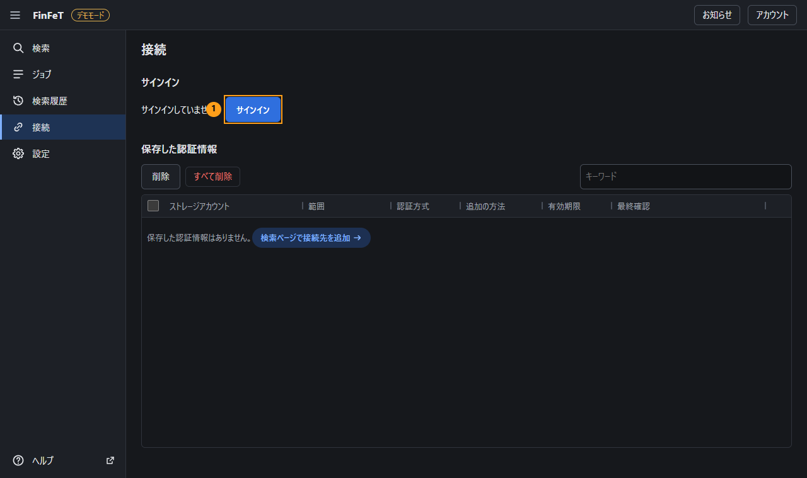
- ナビゲーションの [接続] をクリックして接続ページを開き、[サインイン] をクリックします。

- ブラウザの新しいタブに、Microsoft のサインインページが表示されます。表示されない場合は、ここに表示された URL を開いてください。
- 別のブラウザでサインインする場合は、[コピー] をクリックして URL をコピーし、そのブラウザのアドレスバーに貼り付けます。
サインインが完了すると、ダイアログは自動的に閉じます。サインインページのタブは閉じてください。
複数のアカウントを使用する
業務用と検証用など、複数のアカウントで同時にサインインできます。
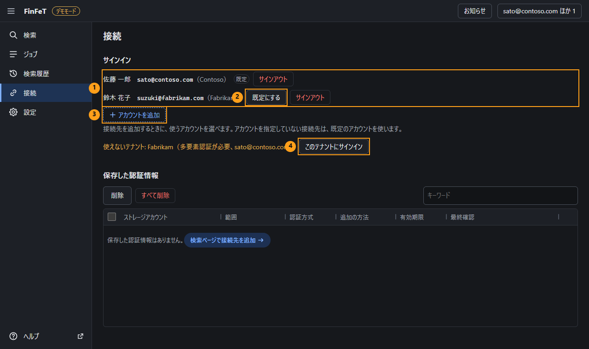
- サインインしているアカウントの一覧です。「既定」のアカウントは、アカウントを指定していない接続先で使用されます。
- [既定にする] をクリックすると、既定のアカウントを変更します。
- [アカウントを追加] をクリックすると、別のアカウントでサインインします（アカウントの選択画面が表示されます）。サインアウトは、アカウントごとに行えます。
- 多要素認証などの条件により使用できないテナント（組織）がある場合に表示されます。[このテナントにサインイン] をクリックすると、そのテナントに改めてサインインします。
2. 接続先を追加する
「接続先」は、検索の対象とするストレージアカウントとコンテナーの組み合わせです。接続先は、検索ページで追加します。

- ナビゲーションの [検索] をクリックして検索ページを開き、[接続先を追加] をクリックします。
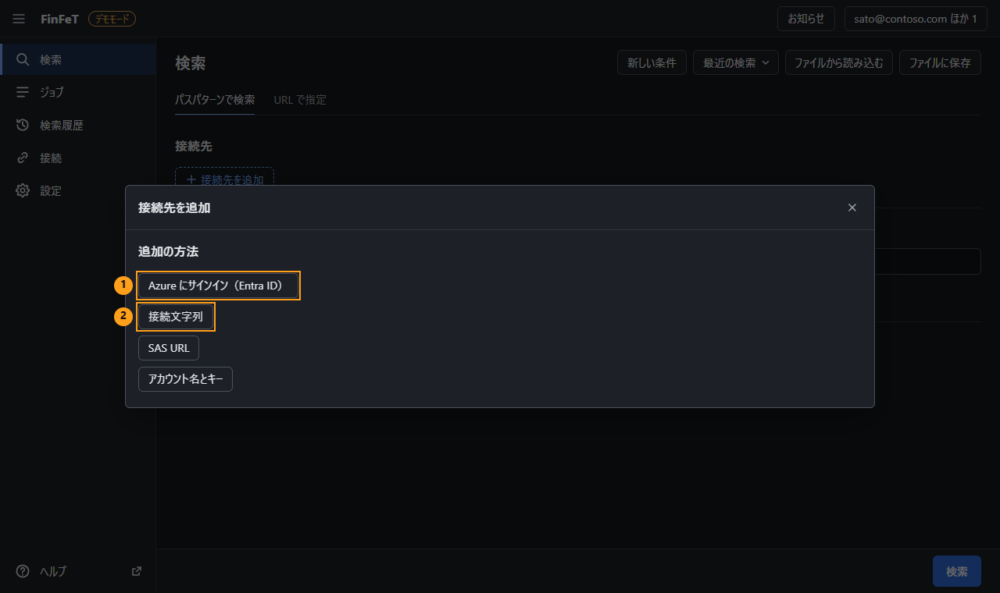
- サインインしたアカウントで利用できるストレージアカウントを、一覧から選択します。通常はこの方法を使用します。
- アクセスキー・SAS URL・接続文字列を使用する場合は、該当する方法を選択して値を貼り付けます。貼り付けた値は暗号化して保存されます（データの取り扱い）。
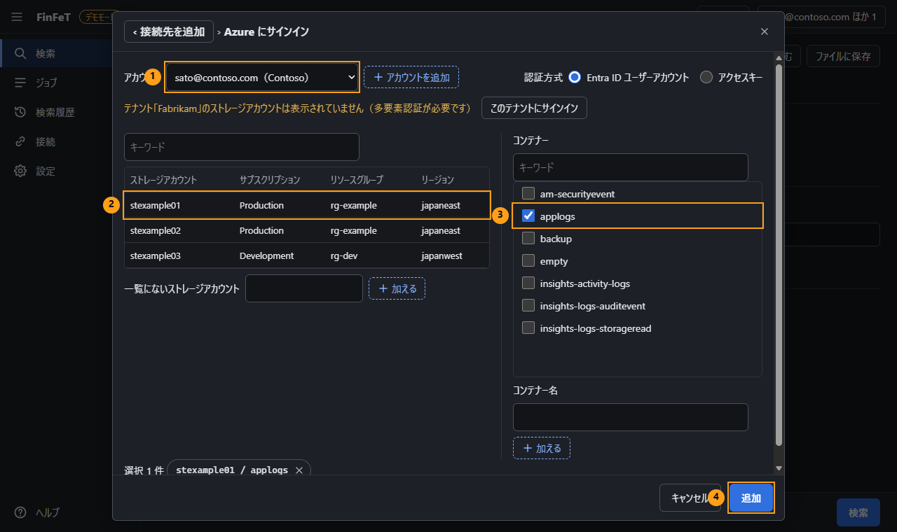
- 複数のアカウントでサインインしている場合は、使用するアカウントを選択します。
- ストレージアカウントを選択します。キーワードで一覧を絞り込めます。
- 検索の対象とするコンテナーをオンにします。複数のコンテナーを選択できます。
- [追加] をクリックすると、検索ページに接続先が追加されます。
3. パスパターンを作成する
「パスパターン」は、検索する Blob の名前の規則です。たとえば vm-logs/web01/2026/11/21/app_2026112109.log のような名前のログは、日付や VM の名前の部分を変数にすることで、まとめて検索できます。
パスパターンの記述方法が不明な場合は、[パスパターンを自動生成] を使用します。本ツールがコンテナー内の Blob 名を調べ、パスパターンの候補を作成します。
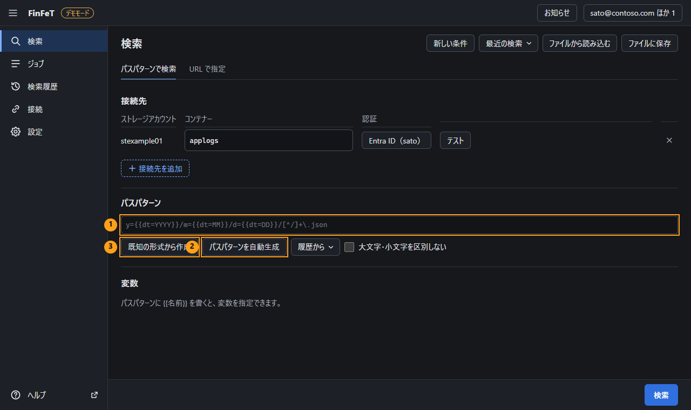
- パスパターンの入力欄です。直接入力することもできます（パスパターンの記述方法）。
- [パスパターンを自動生成] をクリックすると、次のダイアログが表示されます。
- 診断設定のログなど、一般的な形式の Blob は、[既知の形式から作成] で一覧から選択できます。
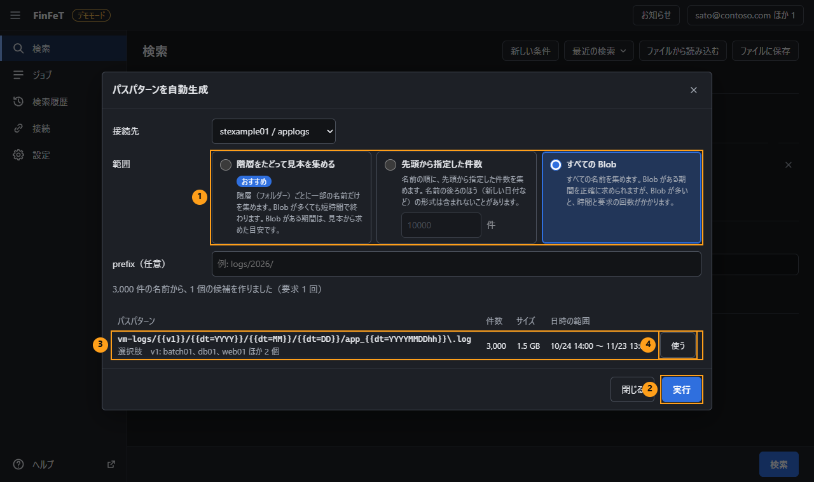
- Blob 名を収集する範囲を選択します。
- 「階層をたどって見本を集める」: 階層ごとに一部の Blob 名を収集します。Blob 数の多いコンテナーでも、短時間で完了します。通常はこの方法を選択します。
- 「先頭から指定した件数」: 名前順に、指定した件数の Blob 名を収集します。件数は、この選択肢の中の欄に入力します。名前の後ろのほう（新しい日付など）の形式は含まれない場合があります。
- 「すべての Blob」: すべての Blob 名を収集します。Blob 数が多い場合は時間がかかりますが、Blob が存在する期間の始まりと終わりを正確に把握できます。
- 各選択肢には、違いの説明が表示されます。
- [実行] をクリックします。実行中に [中止] をクリックすると、収集を中止します。
- パスパターンの候補が、該当する Blob の件数が多い順に表示されます。候補の下の「選択肢」は、値の種類が少ない部分（VM 名やログの種類など）を、選択肢の変数に置き換えたものです。
- 使用する候補の [使う] をクリックすると、パスパターンの入力欄に設定されます。
4. 変数で絞り込む（選択肢・日時）
パスパターンの {{…}} の部分を「変数」と呼びます。変数ごとに、検索する値を指定します。
選択肢の変数
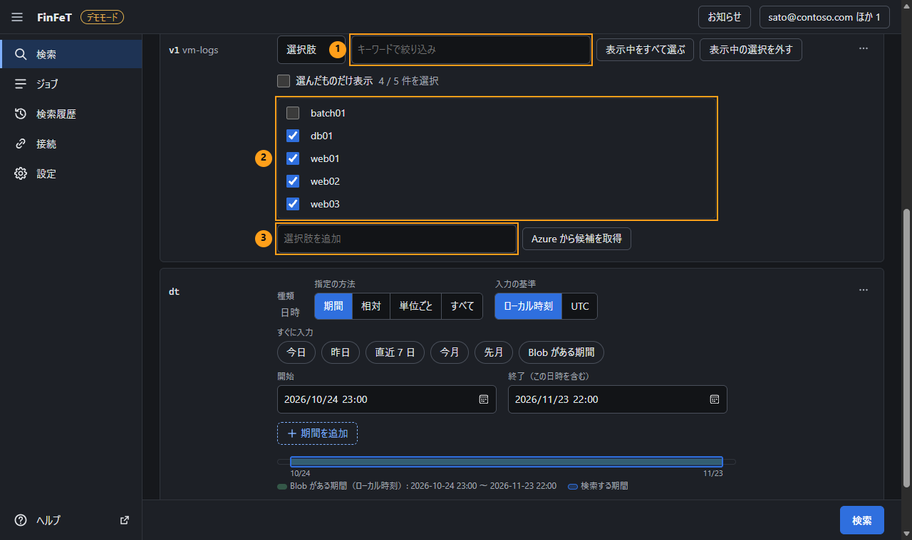
- キーワードを入力すると、選択肢を絞り込めます。
- 検索する値をオンにします。複数の値を選択できます。[表示中をすべて選ぶ] と [表示中の選択を外す] で、表示中の選択肢をまとめて変更できます。[選んだものだけ表示] をオンにすると、選んだ値だけを一覧に表示します。
- 選択肢にない値は、この欄に入力して追加します。[Azure から候補を取得] をクリックすると、実際の Blob の名前から値の候補を取得します。
日時の変数
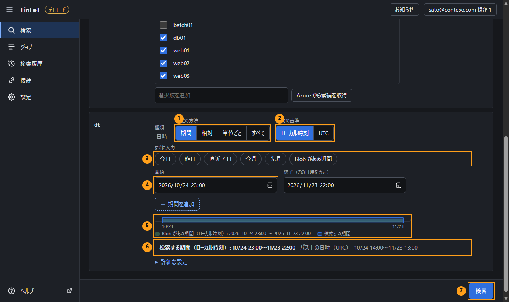
- 指定の方法を選択します。
- 「期間」: 開始と終了の日時を指定します。
- 「相対」: 「今日」「直近 n 日」「先月」など、検索を実行した日時を基準とする期間を指定します。検索履歴から同じ条件で検索した場合も、その日時を基準に計算します。
- 「単位ごと」: 年・月・日・時ごとに、対象とする値の範囲を一覧から選択します（例: 毎月 1 日〜7 日）。同じ値を選択すると、その値に固定されます。
- 「すべて」: 日時を限定しません。
- 期間を入力する時刻の基準（ローカル時刻または UTC）を選択します。
- クリックすると、よく使用する期間を入力します。「Blob がある期間」は、パスパターンの自動生成で把握した期間です。
- 開始と終了の日時を入力します。入力欄は、パスパターンに含まれる日時の単位（日・時など）に応じて表示されます。自動生成で「すべての Blob」を収集した場合は、Blob が存在する期間外の日時は選択できません。
- Blob が存在する期間（緑）と、検索する期間（青）を示します。検索する期間が Blob の存在する期間外にある場合は、注意を表示します。
- 実際に検索する期間を表示します。入力の基準とパス上の日時の基準が異なる場合は、変換後の期間も表示します。
- [検索] をクリックすると、検索を開始します。
[期間を追加] をクリックすると、期間を複数指定できます（例: 2026/01/01〜2026/03/31 と 2026/05/01〜2026/06/30）。いずれかの期間に含まれる Blob を検索します。追加した期間は [この期間を削除] で削除できます。
[詳細な設定] では、指定した間隔ごとの日時だけを検索するよう設定できます（例: 毎日 9 時のログだけを検索する場合は、開始を 9 時にして、間隔を 1 日にします）。
5. 検索を実行し、Blob を選択する
検索が完了すると、検索結果ページが表示されます。

- キーワード・層・種類・最終更新日時・注意で、検索結果を絞り込めます。表の見出しの列名をクリックすると、その列で並べ替えます。見出しの右端の境界線をドラッグすると列の幅を変更でき、境界線をダブルクリックすると元の幅に戻ります。
- ダウンロードする Blob のチェックボックスをオンにします。表の見出しのチェックボックス、または [すべて選択] をクリックすると、絞り込みに一致するすべての Blob（表に見えていない行も含みます）をまとめて選択します。[すべての選択を解除] は、絞り込みで隠れている Blob の選択も外します。検索の途中は、一覧を操作できません。
- 選択が完了したら、[ジョブを作成] をクリックします。
6. ジョブを作成する（リハイドレートとダウンロード）
「ジョブ」は、選択した Blob のリハイドレートとダウンロードを一括して実行する処理の単位です。

ダイアログで、次の項目を指定します。
| 項目 | 内容 |
|---|---|
| 取得の方法 |
「リハイドレートしてダウンロード」: Archive 層の Blob はリハイドレート（オンラインの層に戻す操作）を要求し、完了した Blob から順にダウンロードします。その他の層の Blob は、直ちにダウンロードします。 「リハイドレートのみ」: リハイドレートだけを要求します。完了すると「ダウンロード待ち」になり、後日ダウンロードできます（8）。 「ダウンロードのみ」: Archive 層の Blob は対象外とします。 |
| 復元先の層・優先度 | リハイドレートした Blob を戻す層（Hot・Cool・Cold）と、優先度（標準・高）です。優先度を「高」にすると早く完了しますが、料金は高額になります。 |
| 保存先 | ダウンロードしたファイルを保存するフォルダーです。「ジョブのフォルダーを作る」をオンにすると、ジョブごとにフォルダーを分けて保存します。 |
| パス構造 | 「階層を保つ」（Blob 名の / をフォルダーの区切りとして扱います）・「階層を名前にする」・「ファイル名だけ」・「指定する」から選択します。「指定する」では、「Blob の情報」「検索条件の変数」「日時」「区切り・文字」のブロックをクリックまたはドラッグして並べ、保存するパスを組み立てられます。ブロックは、ドラッグまたはキーボードの ← → で移動し、× または Delete キーで削除します。パスを直接入力することもできます。 |
| 同名のファイル | 保存先に同じ名前のファイルがある場合の扱いを、「番号を付ける」・「スキップ」・「上書き」から選択します。 |
| 圧縮ファイルの展開 | オンにすると、ダウンロードした zip・tar・gz・bz2・xz のファイルを、同じフォルダーに展開します。.tar.gz のように、展開したファイルがさらに圧縮ファイルである場合は、再帰的に展開します。元のファイルは削除しません。展開した結果は、ジョブの詳細ページの Blob の「理由」とログで確認できます。 |
[キューに追加] をクリックすると、ジョブがキュー（実行待ちのジョブの一覧）に追加されます。
7. ジョブの進捗を確認する
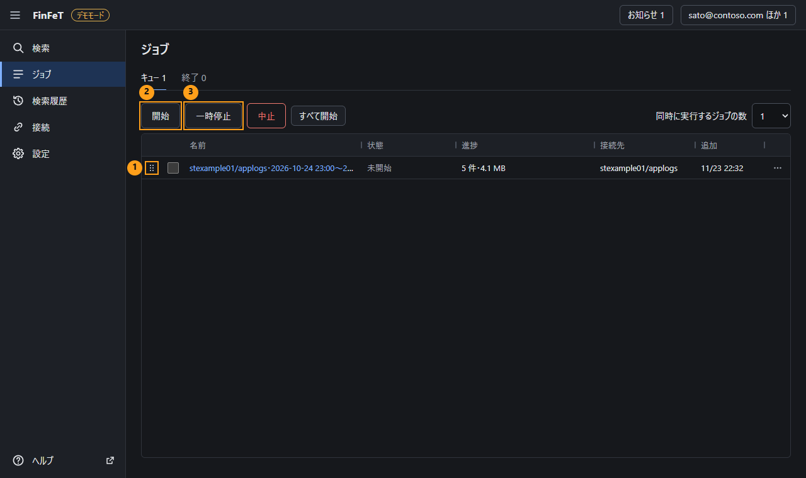
- ジョブはキューの上から順に開始されます。ハンドル（⠿）をドラッグすると、順番を変更できます（キーボードでは Alt+↑ / Alt+↓）。
- オンにしたジョブを [開始] します。
- [一時停止] をクリックすると、ジョブを一時的に停止します。[中止] をクリックすると、そのジョブは終了します。
先のジョブがリハイドレートの完了を待っている間は、次のジョブが実行されます。ジョブの名前をクリックすると、ジョブの詳細ページが表示されます。
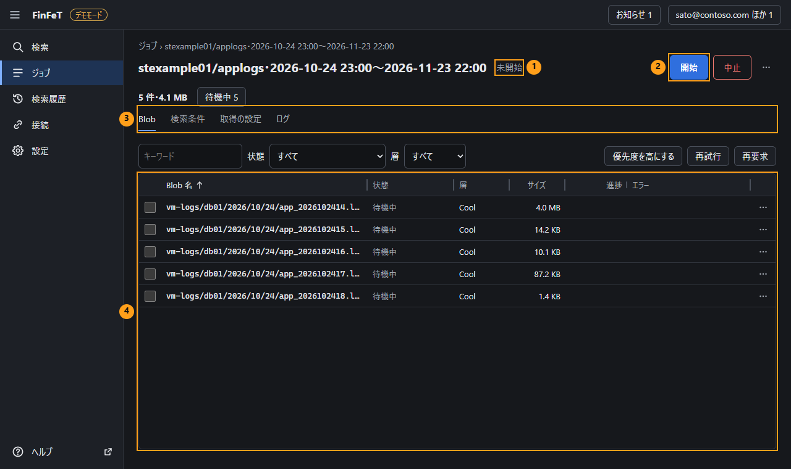
- ジョブの状態です。
- ジョブを操作するボタンです（開始・一時停止・中止など。表示されるボタンは、ジョブの状態によって異なります）。
- 「Blob」「検索条件」「取得の設定」「ログ」の表示を切り替えます。実行中も、ダウンロード速度の上限（帯域）を変更できます。
- Blob ごとの状態です。リハイドレート中の Blob は、[優先度を高にする] で優先度を上げられます（料金が高くなります）。
ポップアップ通知
ジョブの開始・完了・エラーや、検索の終了は、画面右上にポップアップで表示されます。ポップアップをクリックすると、ジョブや検索結果の詳細を開きます。エラーの場合は、エラーになった Blob やエラーのログを開きます。表示中のページに関するお知らせは、ポップアップで表示しません。すべてのお知らせは、上部のバーの [お知らせ] で後から確認できます。ポップアップは、設定ページの「画面」で無効にできます。
8. 後日のダウンロード、再開と再実行
後日のダウンロード
- 「リハイドレートのみ」のジョブは、リハイドレートが完了すると「ダウンロード待ち」になり、画面右上の「お知らせ」に表示されます。
- ジョブの詳細ページで [ダウンロードを開始] をクリックします。保存先などの設定は、このときに変更できます。
再開と再実行
終了したジョブの詳細ページには、次のボタンがあります。
| ボタン | 動作 |
|---|---|
| [再開] | 同じジョブのうち、完了していない Blob（エラー・中止・中断したもの）だけを処理します。リハイドレートを要求済みの Blob には、再度の要求を行いません。 |
| [すべて再実行] | 同じ Blob と取得の設定で、新しいジョブを作成します。元のジョブの記録は残ります。 |
| [同じ条件で検索] | 元のジョブの検索条件で、検索ページを開きます（その後に追加された Blob も対象になります）。 |
Blob の一覧で Blob を選択して [選択した Blob を再実行] をクリックすると、選択した Blob だけで新しいジョブを作成します。
9. 検索履歴を利用する

- 実行した検索は、検索履歴に記録されます。行の右側の「…」から [検索ページで開く] を選択すると、同じ条件で検索ページを開きます。
- よく使用する条件はピン留めすると、一覧の上部に固定されます。
- [エクスポート] をクリックすると、検索条件をファイル（.finfet-abs.json）に出力します。オンにした行がある場合はその行だけを、ない場合はすべての行を出力します。出力したファイルは、ほかの利用者と共有できます。
- [インポート] をクリックすると、出力したファイルを読み込みます。
10. 本ツールを終了する
本ツールを終了するには、画面右上のメニューから [終了] を選択します。実行中のジョブがある場合は、終了してよいかを確認するメッセージが表示されます。
また、本ツールの画面（ブラウザのタブ）をすべて閉じると、一定時間（既定は 1 分）の経過後に、本ツールは自動的に終了します。実行中のジョブや検索がある場合は、それらが完了するまで終了しません。この動作と時間は、設定ページの「画面」で変更できます。
本ツールを起動したウィンドウ（コンソール）には、本ツールのログが表示されます。表示の有無とログのレベルは、設定ページの「データとログ」で変更できます。ログはファイルにも保存されます（データの保存先）。
11. 画面の表示を調整する（幅・テーマ・文字の大きさ）
本ツールの画面は、ブラウザの幅に合わせて配置を切り替えます。PC のブラウザの幅を狭くした場合や、タブレット・スマートフォンの幅で表示した場合も、ページ全体を横方向にスクロールせずに操作できます。
| ブラウザの幅 | ナビゲーション | 表とダイアログ |
|---|---|---|
| 1000px 以上 | 画面左側に、名前付きで表示します。左上の [≡]（ナビゲーションの表示を切り替え）で、アイコンだけの表示に切り替えられます。 | 表で表示します。列が表の幅に収まらない場合は、表の行をカード形式で表示します（[列] で表示する列を減らすと、表に戻ります）。 |
| 640～999px | 画面左側に、アイコンだけで表示します。 | |
| 640px 未満 | 画面下部に、タブとして表示します。 | 表の行をカード形式で表示します。ダイアログは画面全体に表示します。 |
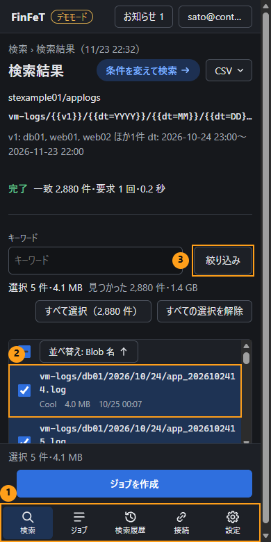
- ページは、画面下部のタブで切り替えます。ヘルプは、右上のアカウントメニューから開きます。
- 検索結果は、1 件ずつカード形式で表示します。Blob 名の下に、層・サイズ・最終更新日時を表示します。並べ替える項目は、[並べ替え] で選択します。
- キーワード以外の条件（層・種類・最終更新・注意）は、[絞り込み] をクリックすると表示されます。適用中の条件の数は、ボタンに表示されます。
検索・ジョブの作成などの主要な操作ボタンは、スクロール位置にかかわらず画面下部に表示されます。
テーマと文字の大きさは、設定ページの「画面」で変更します。
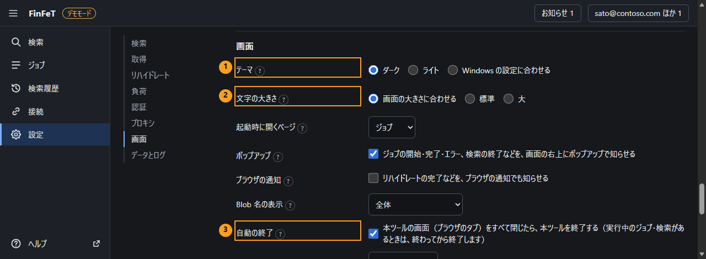
- テーマ: ダーク（既定）、ライト、Windows の設定に合わせる、から選択します。
- 文字の大きさ: 画面の大きさに合わせる（既定）、標準、大、から選択します。[大] を選択すると、文字のほか、ボタン・入力欄・表の行も大きくなります。「画面の大きさに合わせる」では、ブラウザの幅が 1,600px 以上の場合は [大] と同じ大きさ、2,200px 以上の場合はさらに大きく表示します。幅が 1,600px 未満の場合は [標準] と同じです。
- 自動の終了: 「10. 本ツールを終了する」を参照してください。
変更した設定は、[保存] をクリックすると、開いているすべての画面に反映されます。
ボタンは、目的ごとに見た目を分けています。塗りつぶしの青は主な操作、角の丸い淡い青（→ 付き）はほかのページへの移動、破線の枠（+ 付き）は追加、赤い文字は削除・中止、▾ 付きはメニューを開くボタンです。
正しく動作しない場合は、トラブルシューティングを参照してください。